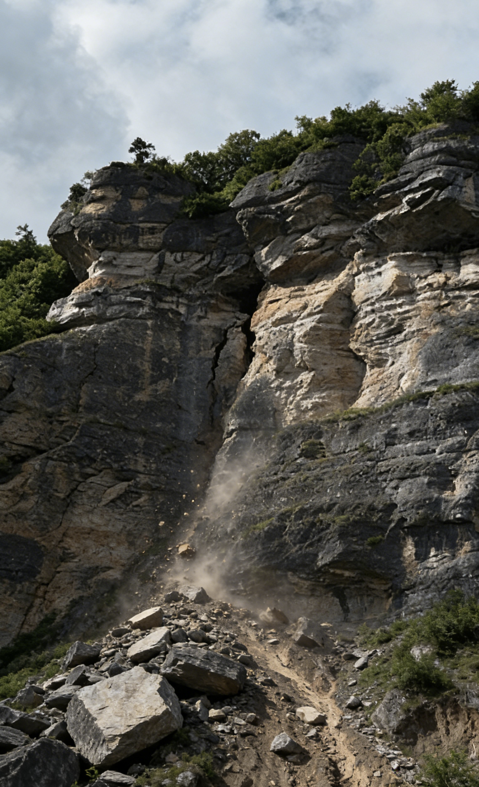

Precision Monitoring for the Built Environment
Deploying military-grade optical telemetry and seismic analytics to safeguard global infrastructure. Precision is no longer a metric; it is a mandate.
Strategic Mine Stability & Geotechnical Intelligence
Real-time GNSS displacement monitoring for open-pit and underground mines — delivering continuous slope stability data and automated risk signals to keep operations safe and compliant.
- Real-time surface displacement & slope stability analytics.
- Automated early warning protocols for landslide prevention.
- Sub-millimeter precision in extreme high-altitude environments.
Hydro-Dynamic Asset Stability
Deploying high-frequency telemetry for hydro-electric dams. Sub-millimeter displacement detection and automated alert protocols.
Early Warning System (EWS)
Automated multi-level alerts via satellite uplink.
GNSS Kinematic Processing
High-frequency position updates for active tectonic monitoring.
Subterranean & Slope Stability Assurance
Specialized instrumentation for the world's most demanding environments. From tailings dam integrity to high-altitude rock avalanche monitoring.
Explore Geology Module
Structural Health Decoded
Monitoring the vital signs of our cities. Our sensors provide continuous structural health monitoring (SHM) for bridges, tunnels, and high-rise developments.